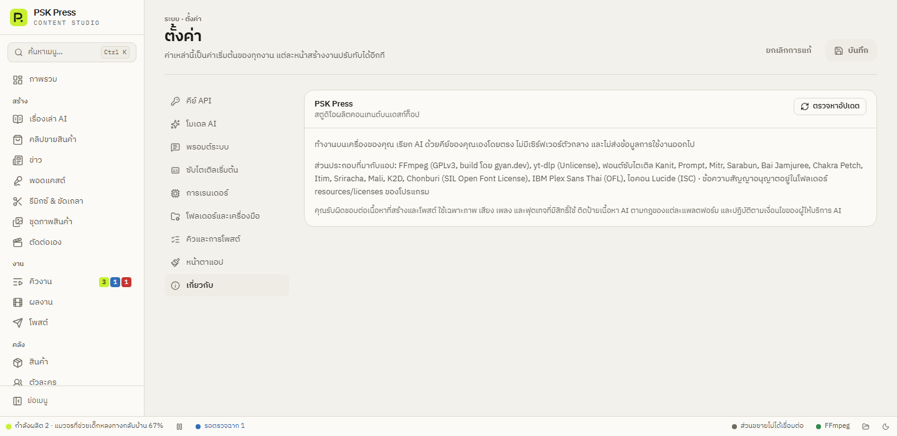

เริ่มต้น
ติดตั้งและอัปเดต
ดาวน์โหลดตัวติดตั้งสำหรับ Windows ติดตั้ง เปิดใช้ครั้งแรก และให้แอปอัปเดตตัวเอง
สิ่งที่ต้องมี
- Windows 10 หรือ 11 (64 บิต)
- Google Chrome — สำหรับส่วนขยายที่ใช้ Gemini, ChatGPT, Google Flow และโพสต์โซเชียล
- อินเทอร์เน็ต
- บัญชี Google (สำหรับ Gemini และ Google Flow) หรือคีย์ API ของผู้ให้บริการ AI — เลือกได้ใน ตั้งค่าครั้งแรก
ไม่ต้องติดตั้งโปรแกรมอื่นเพิ่ม ตัวติดตั้งมีทุกอย่างมาให้แล้ว:
- FFmpeg — สำหรับต่อวิดีโอ
- yt-dlp — สำหรับดาวน์โหลดคลิปจากลิงก์
- WebView2
- ฟอนต์ไทย 12 แบบ สำหรับซับ
- ส่วนขยายเบราว์เซอร์ PSK Press Bridge
ดาวน์โหลดและติดตั้ง
- เปิดหน้า ดาวน์โหลดเวอร์ชันล่าสุด
- ในหัวข้อ Assets กดไฟล์ที่ลงท้ายด้วย
_x64-setup.exe(เช่นPSK.Press_0.5.0_x64-setup.exe, ขนาดประมาณ 300 MB เพราะรวม WebView2 และ FFmpeg มาให้แล้ว) — ไฟล์.msiก็ใช้ได้ แต่แนะนำsetup.exe - เปิดไฟล์ที่ดาวน์โหลดมา ตัวติดตั้งจะติดตั้งให้เฉพาะบัญชี Windows ของคุณ ไม่ต้องใช้สิทธิ์ผู้ดูแลระบบ
- เปิด PSK Press จากเมนู Start หรือไอคอนบนเดสก์ท็อป
เปิดครั้งแรก
หน้าแรกของแอปคือ ภาพรวม ด้านขวามีกล่อง ตั้งค่าให้พร้อมก่อนสร้าง ซึ่งบอกว่ายังขาดอะไรตามผู้ให้บริการที่เลือกไว้ แต่ละข้อมีลิงก์ไปหน้าที่ต้องแก้ ทำให้ครบทุกข้อตามหัวข้อต่อไป:
แถบล่างสุดของแอป (แถบสถานะ) บอกงานที่กำลังผลิต สถานะส่วนขยาย บัญชีที่ล็อกอิน และสถานะ FFmpeg ตลอดเวลา
อัปเดตแอป
แอปตรวจหาเวอร์ชันใหม่ให้เอง 8 วินาทีหลังเปิดแอป และทุก 6 ชั่วโมง ถ้ามี จะขึ้นการ์ด มีเวอร์ชันใหม่ vX.Y.Z ที่มุมซ้ายล่าง พร้อมรายการสิ่งที่เปลี่ยน:
- อัปเดตตอนนี้ — ดาวน์โหลด (มีแถบ %) ติดตั้ง แล้วเปิดแอปใหม่ให้เอง
- ไว้ทีหลัง — ซ่อนการ์ดของเวอร์ชันนี้ แอปจะแจ้งอีกเมื่อมีเวอร์ชันถัดไป
ถ้ามีงานกำลังผลิตอยู่ แอปจะถามก่อนว่า กำลังทำอยู่ N งาน — อัปเดตเลยไหม?
- อัปเดตทันที: งานที่ค้างจะเริ่มขั้นตอนนั้นใหม่หลังเปิดแอป ภาพและคลิปที่ทำเสร็จแล้วยังเก็บไว้
- กด รอให้เสร็จก่อน ถ้าไม่อยากให้งานสะดุด
ตรวจเองได้ทุกเมื่อที่ ตั้งค่า → เกี่ยวกับ → ตรวจหาอัปเดต ในหน้าเดียวกันจะเห็นเลขเวอร์ชันที่ใช้อยู่


หลังอัปเดตแล้ว ให้รีโหลดส่วนขยายด้วย
ส่วนขยายใน Chrome โหลดจากโฟลเดอร์ของแอป เมื่อแอปอัปเดต ไฟล์ส่วนขยายในโฟลเดอร์ก็เปลี่ยนไปด้วย ให้เปิด chrome://extensions แล้วกดปุ่มรีโหลด (↻) ที่การ์ด PSK Press Bridge ครั้งเดียว
ข้อมูลของคุณเก็บที่ไหน
| อะไร | ที่เก็บ |
|---|---|
| วิดีโอที่เสร็จแล้ว | โฟลเดอร์ Videos\PSK Press\วันที่\ชื่องาน (เปลี่ยนได้ที่ ตั้งค่า → โฟลเดอร์และเครื่องมือ) — แต่ละงานมีภาพฉาก คลิป เสียง และไฟล์บันทึก log.jsonl |
| คีย์ API | ตัวจัดการข้อมูลรับรองของ Windows (Credential Manager) ไม่ได้เขียนลงไฟล์ |
| การตั้งค่า คิวงาน สินค้า ตัวละคร | %APPDATA%\com.psk.press |
ถอนการติดตั้ง: การตั้งค่า Windows → แอป → PSK Press → ถอนการติดตั้ง วิดีโอในโฟลเดอร์ผลงานจะไม่ถูกลบ